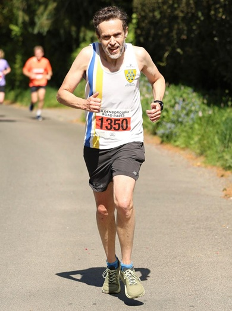
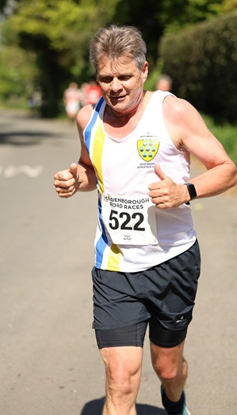
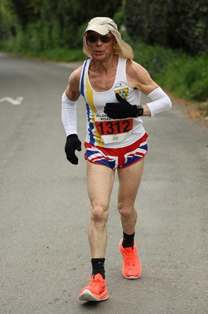
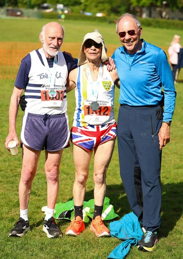

SAC runners turned out at two local events on bank holiday Monday 3rd May, with some impressive results.
Dan Witt was 14th and first M50 in the Hildenborough 5 in 33:58. "It was my first road race since Autumn 2022, so was quite pleased to be just under 34 minutes" said Dan. Also in the 5, Alex Hofmann was 25th and 5th M50 in 37:38 and Lionel Steilow was 93rd and 2nd M75 in 63:51.
The Hildenborough 5 results are here.
In the ten mile race, Anton Mauve was 12th and 2nd M55 in 78:15. The Hildenborough 10 results are here.
In the Ted Pepper 10k at Bromley on the same day, Keith Dowson kept up the defence of his Kent Road Race Grand Prix title with an M60 win in an amazing 39:17 over the twisty and rutted off-road course. Keith was 21st overall.
Simon Hallpike was the only other SAC runner at the KGP event, finishing 144th and 3rd M70 in 51:24.
The Ted Pepper results are here.
Thanks for the photos from the Hildenborough races to Richard Craig-McFeely at Instagram @picsbyrcm.
